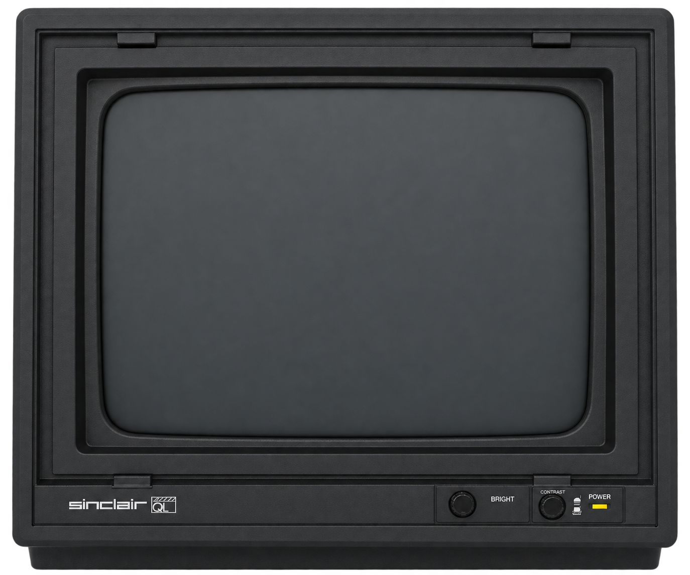

QL Emulator
, click the screen and press F1: you are ready to begin.
SuperBASIC, classic software and, if you like, a chat with AI.


Click a Microdrive to manage its cartridges.
Use the mouse wheel or swipe to scroll. Here: ↑ ↓ by line · Page Up/Down by page · Home/End to the beginning/end.
More to explore
Loading Minerva…
Advanced controls ROM and diagnostics
With the QL paused, step through one CPU instruction at a time.
Waiting for the ROM.Click the screen to use the keyboard. Backspace deletes to the left; Ctrl + → deletes under the cursor.
More about the QL
Stories, ideas and memories to explore further.
Videos about the QL
They open in a separate window. Your QL stays here.The QL, as told by its designer
David Karlin recalls creating the QL and his days at Sinclair Research in a conversation at the LOAD ZX Spectrum Museum.
LOAD ZX SpectrumWatch on YouTube Trivia23:22Ten facts to rediscover the QL
Ten short stories invite you to look at the QL again and discover the lesser-known details of its history.
The Laird's LairWatch on YouTube History42:32The promise of a quantum leap
From an ambitious launch to the challenges of the market: the story of a computer that set out to make the future accessible.
Fallen TechWatch on YouTube Retrospective18:51Inside a classic
A tour of the QL’s hardware, programs and games, guided by its history and Nostalgia Nerd’s perspective.
Nostalgia NerdWatch on YouTube